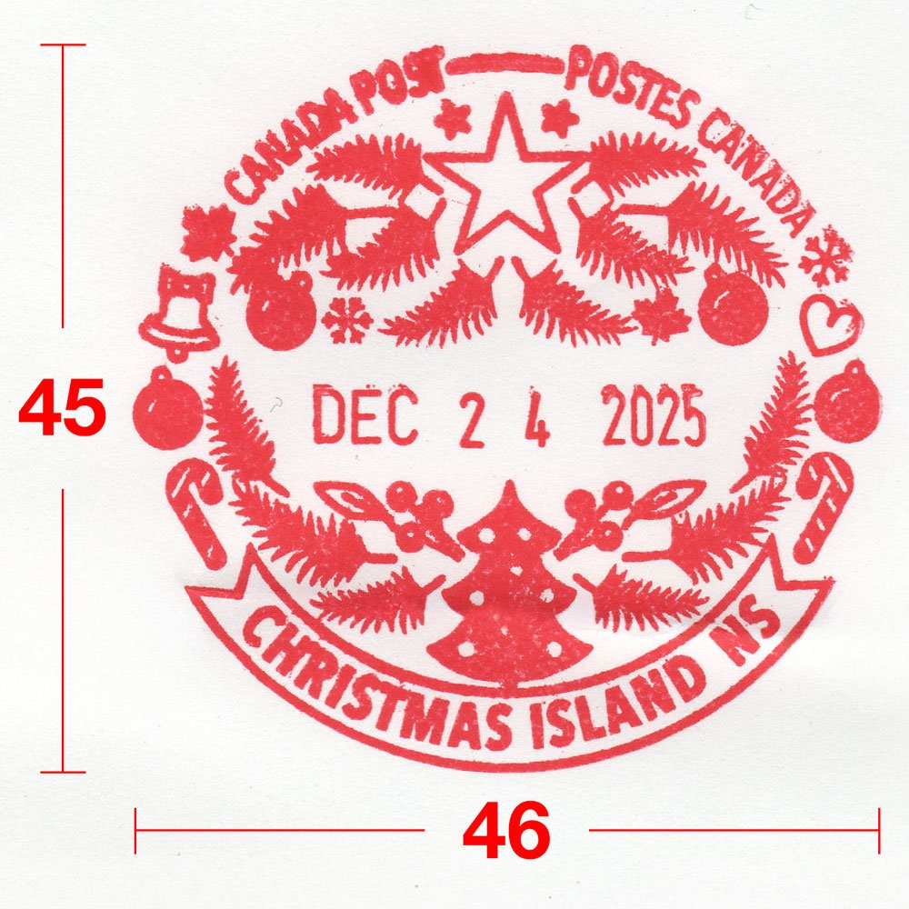

Christmas Island STN Main pictorial cancel
Holiday: Christmas decoration, star, Christmas tree · Red
- Status
- Active
- Run dates
- 2024-01-01 to present
- Design
- holiday: Christmas decoration, star, Christmas tree
- Ink colour
- Red
- Designer
- Unknown
- Post office
- Christmas Island STN Main
8499 Grand Narrows Hwy
Christmas Islands, NS
B1T 1A0 - Subjects
- festivity, Christmas, tradition, culture, religion, holiday
Collect it by mail. Send your stamped covers, with a stamped return envelope, to the post office address above. How to collect pictorial cancels by mail · en français
 Christmas Island STN MainGreen
Christmas Island STN MainGreen Christmas Island STN MainRed
Christmas Island STN MainRed Whycocomagh POHead of the Waters / Tête des eaux
Whycocomagh POHead of the Waters / Tête des eaux Inverness POCABOT
Inverness POCABOT Louisbourg Main POFortress of / Fortresse de / LOUISBOURG
Louisbourg Main POFortress of / Fortresse de / LOUISBOURG